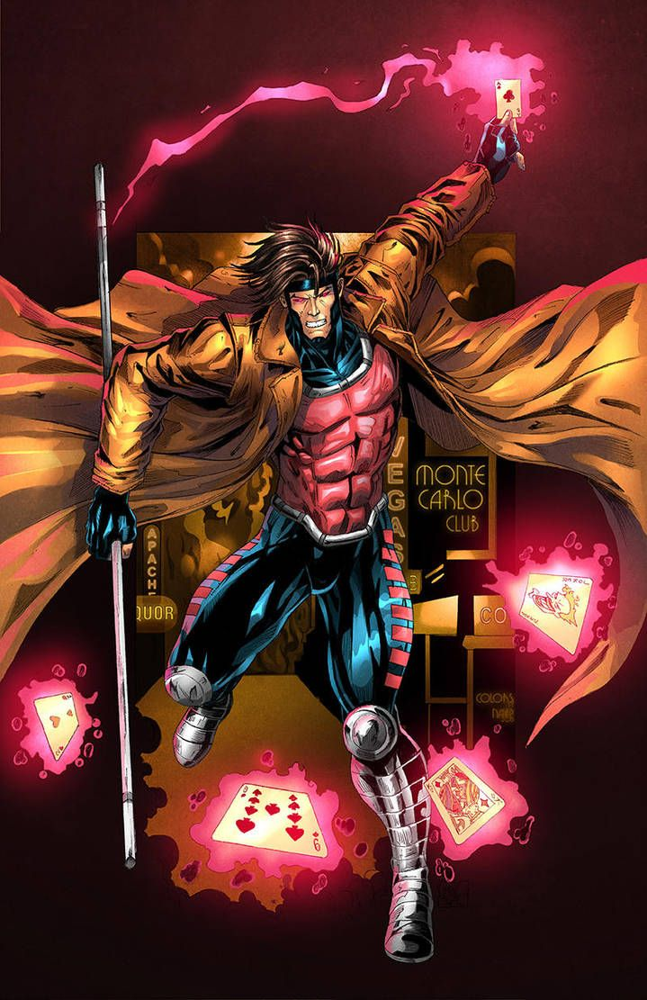

About Gambit
Gamit aka Remy LeBeau is a memeber of the X-men. Gambit is a mutant who has the ability to create, control, and manipulate pure kinetic energy. He is incredibly knowledgeable and skilled in card throwing, hand-to-hand combat, and the use of a bo staff. Gambit is known to charge playing cards and other object with kinetic energy, using them as explosive projectiles.
Gambit's Associations
Team Affiliations
- X-Men Blue Team
- Thieves Guild
- X-Factor
Family and Friends
Gambit has a complicated past, growing up in Louisiana he started early life as a member of the Thieves Guild before joining the X-Men. Many of his past associations are seen as shady characters. The links below provide more details on these characters.